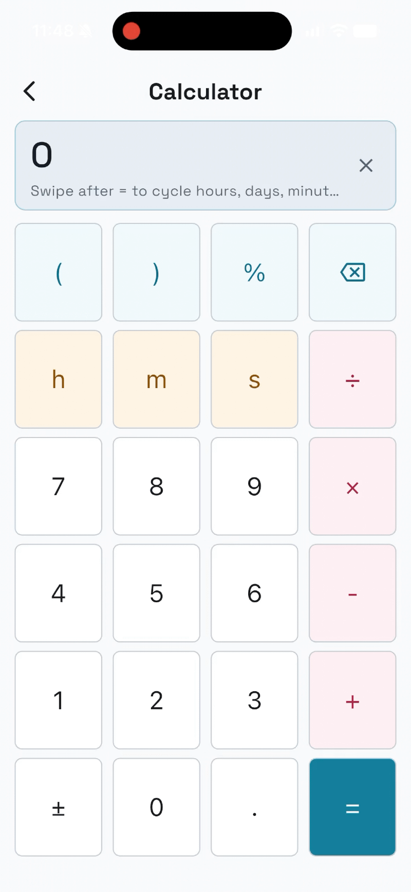

Pitolio
Pitolio 1.2.0 · Help updated 27 October 2026
Flights, fuel timer, flight history and time calculator on iPhone and iPad. Books, flight pages, Pencil notes and templates on iPad.
Demos / Démonstrations
Enter information with the keyboard, Apple Pencil or the guided wizard. Choose whichever suits you at the time, switch whenever you want, and mix the methods within the same flight notes.
Saisissez vos notes au clavier, à l’Apple Pencil ou avec l’assistant guidé. Choisissez la méthode qui vous convient sur le moment, passez de l’une à l’autre et mélangez-les au sein des mêmes notes de vol.
Enter data with the keyboard / Saisir au clavier
Tap a field and type its value using the keyboard.
Touchez un champ et saisissez sa valeur au clavier.

Copy ATIS with the wizard / Noter l’ATIS avec l’assistant
Use the guided wizard to enter the ATIS information you hear, step by step.
Notez les informations de l’ATIS que vous écoutez, étape par étape avec l’assistant.

Enter data with Apple Pencil / Écrire à l’Apple Pencil
Write directly in the fields with Apple Pencil, alongside any typed entries.
Écrivez directement dans les champs à l’Apple Pencil, à côté des informations saisies au clavier.

Multiple pages and zoom levels / Plusieurs pages et niveaux de zoom
Move between flight pages and use different zoom levels to see the whole page or focus on a detail.
Passez d’une page de vol à l’autre avec différents niveaux de zoom, pour voir la page entière ou un détail.

Calculate times and durations / Calculer des heures et des durées
Use the time calculator to work with hours and minutes.
Utilisez la calculatrice de durées pour vos calculs en heures et minutes.

Edit templates visually / Modifier les modèles graphiquement
Use the graphical template editor to arrange fields and adapt the layout to your own notes.
Organisez les champs et adaptez la mise en page à vos notes avec l’éditeur graphique de modèles.

Support
For help with Pitolio, email pitolio@couillonnade.com.
Include your device, iOS or iPadOS version, Pitolio version from About & tips, the steps you took and what happened. Remove private flight information from screenshots.
Start here
On iPad, create a book and choose Flight Notes + Blank paper, then open New flight pages. Write with Apple Pencil or tap fields to type. On iPhone or iPad, Start flight asks for starting fuel and the first tank; recording OUT is a separate action.
Record OUT, OFF, ON and IN manually, or enable optional Auto Track. At the end, use End & save flight; Flight history holds the saved logs. Correct a time in Zulu or Local to update the log and associated pages together.
User guide
- Quick start
- Books, pages, copying and Trash
- Writing, ATIS and shared times
- Templates and PDF backgrounds
- Flights, fuel timer and Auto Track
- PDF export and editable backups
- Settings and time calculator
- Troubleshooting
Notes and flight records stay on your device. Export an editable .apbook backup before deleting the app or changing devices. A PDF is a reading copy; book backups do not include all flight history or settings.
Pitolio privacy policy
Last updated: 19 October 2026
Pitolio records flights, with a fuel timer, flight history and time calculator on iPhone and iPad. Books, flight pages, Pencil notes and templates are available on iPad only.
Data stays on your device
Pitolio does not require an account. It has no advertising, analytics, developer-operated cloud sync, or in-app crash-reporting service. The app does not send your notes, flight records or location to the developer.
Pitolio stores these items locally:
- App settings and calculator state.
- Active flights and saved flight logs, fuel entries, and flight milestones.
- Books, flight pages, typed values, selected options and Pencil handwriting.
- Templates and copies of PDF backgrounds that you import.
- Items moved to the app's Trash until restored or otherwise removed with app data.
Optional location
Auto Track uses device location and movement to help detect OUT, OFF, ON and IN. It requests Always location access so detection can continue during an armed session while the device is locked. Location samples are processed on the device; the app does not upload them or create a saved route track.
Location is optional. You can use notes, the calculator and manual flight controls without enabling Auto Track. You can change permission in iOS/iPadOS Settings. The app stops its location updates when no eligible Auto Track session is active.
Notifications
Fuel reminders are local notifications scheduled on your device. They do not require a push-notification server. You control notification permission in iOS/iPadOS Settings.
Imports, exports and backups
When you import a PDF, template or editable book, Pitolio copies the selected content into its local storage. When you export a PDF, text template or .apbook backup, you choose where it goes using the system Files/share interface.
A service or person you choose to share with receives that exported content. Files stored in iCloud Drive or another provider, system device backups, and diagnostics you independently share with Apple are governed by those services and your device settings. Pitolio does not operate those services.
Your choices
You can clear a page, move books and flight pages to Trash, delete saved flight logs, remove reusable templates, and restore or export books. Deleting a template preserves backgrounds used by existing flight pages. Deleting the app removes its on-device data; exported copies and system backups may remain wherever you saved them.
Contact and changes
For privacy questions, email pitolio@couillonnade.com or see Pitolio support.
This policy will be updated if the app's data practices change.
Assistance et confidentialité
Pitolio 1.2.0 · Aide mise à jour le 27 octobre 2026
Vols, minuteur carburant, historique des vols et calculatrice de durées sur iPhone et iPad. Carnets, pages de vol, notes au Pencil et modèles sur iPad.
Assistance
Pour toute question sur Pitolio, écrivez à pitolio@couillonnade.com.
Indiquez votre appareil, sa version d’iOS ou d’iPadOS, la version de Pitolio dans À propos et les étapes du problème. Retirez les informations de vol privées de vos captures.
Bien démarrer
Sur iPad, créez un carnet avec Notes de vol + Papier vierge, puis de nouvelles pages de vol. Écrivez au Pencil ou touchez un champ pour saisir du texte. Sur iPhone ou iPad, Démarrer un vol permet de choisir le carburant de départ et le premier réservoir ; l’enregistrement de OUT est une action distincte.
Enregistrez OUT, OFF, ON et IN manuellement, ou activez le suivi automatique facultatif. Terminez avec Terminer et enregistrer le vol ; retrouvez son journal dans l’historique des vols. Une correction d’heure en Zulu ou en heure locale se répercute dans le journal et les pages associées.
Les modèles proposent des sections, colonnes, lignes et champs. Le réglage Copier le contenu de chaque champ détermine les valeurs et l’écriture conservées lors de la copie d’un vol. Les pages existantes gardent leur mise en page.
Consulter le guide complet en anglais : démarrage, carnets et pages, ATIS, modèles, minuteur carburant, export, sauvegarde, réglages et dépannage.
Vos notes et journaux restent sur votre appareil. Avant de supprimer l’app ou de changer d’appareil, exportez une sauvegarde modifiable .apbook. Un PDF est une copie de lecture ; une sauvegarde de carnet ne contient pas tout l’historique des vols ni tous les réglages.
Politique de confidentialité de Pitolio
Dernière mise à jour : 19 octobre 2026
Pitolio enregistre les vols, avec un minuteur carburant, un historique des vols et une calculatrice de durées sur iPhone et iPad. Les carnets, les pages de vol, les notes au Pencil et les modèles sont disponibles uniquement sur iPad.
Vos données restent sur votre appareil
Pitolio ne nécessite aucun compte. L’app ne contient ni publicité, ni outil d’analyse d’utilisation, ni synchronisation dans le cloud gérée par le développeur, ni service intégré de signalement des plantages. Elle n’envoie au développeur ni vos notes, ni vos données de vol, ni votre position.
Pitolio enregistre ces éléments localement :
- Les réglages de l’app et l’état de la calculatrice.
- Les vols en cours et les journaux de vol enregistrés, les saisies de carburant et les étapes des vols.
- Les carnets, les pages de vol, les valeurs saisies, les options sélectionnées et l’écriture au Pencil.
- Les modèles et les copies des fonds PDF que vous importez.
- Les éléments placés dans la Corbeille de l’app, jusqu’à leur restauration ou leur suppression avec les données de l’app.
Localisation facultative
Le suivi automatique utilise la position et les mouvements de l’appareil pour aider à détecter les heures OUT, OFF, ON et IN. Il demande l’accès à la localisation Toujours pour poursuivre la détection pendant une session activée lorsque l’appareil est verrouillé. Les relevés de position sont traités sur l’appareil ; l’app ne les transmet pas et n’enregistre pas de trace du trajet.
La localisation est facultative. Vous pouvez utiliser les notes, la calculatrice et les commandes manuelles du vol sans activer le suivi automatique. Vous pouvez modifier l’autorisation dans les Réglages d’iOS ou d’iPadOS. L’app cesse les mises à jour de position lorsqu’aucune session de suivi automatique éligible n’est active.
Notifications
Les rappels de carburant sont des notifications locales programmées sur votre appareil. Ils ne nécessitent aucun serveur de notifications push. Vous gérez l’autorisation des notifications dans les Réglages d’iOS ou d’iPadOS.
Imports, exports et sauvegardes
Lorsque vous importez un PDF, un modèle ou un carnet modifiable, Pitolio copie le contenu sélectionné dans son stockage local. Lorsque vous exportez un PDF, un modèle texte ou une sauvegarde .apbook, vous choisissez sa destination dans l’interface système de fichiers ou de partage.
Le service ou la personne avec qui vous choisissez de partager reçoit ce contenu exporté. Les fichiers placés dans iCloud Drive ou chez un autre fournisseur, les sauvegardes système de l’appareil et les diagnostics que vous choisissez de partager avec Apple sont régis par ces services et par les réglages de votre appareil. Pitolio ne gère pas ces services.
Vos choix
Vous pouvez effacer une page, placer des carnets ou des pages de vol dans la Corbeille, supprimer des journaux de vol enregistrés, retirer des modèles réutilisables et restaurer ou exporter des carnets. Supprimer un modèle conserve les fonds utilisés par les pages de vol existantes. Supprimer l’app efface ses données sur l’appareil ; les copies exportées et les sauvegardes système peuvent subsister à l’endroit où vous les avez enregistrées.
Contact et modifications
Pour toute question sur la confidentialité, écrivez à pitolio@couillonnade.com ou consultez l’assistance Pitolio.
Cette politique sera mise à jour si les pratiques de l’app en matière de données changent.